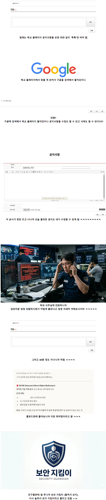

학교 홈페이지 공지글 수정 버그 찾아낸 사람 ㄷㄷㄷㄷㄷ
댓글
막줄이 웃기네 ㅋㅋㅋ
ㅋㅋㅋㅋㅋㅋㅋㅋㅋㅋ 지킴이


보안지킴이를 자주국방하는 지킴이 라서 보지 자지 어떰

ㅋㅋㅋㅋㅋㅋ 이게 학생들 별명짓는법이지 마지막 별명때문에 신뢰감 팍 상승
그와중에 지킴이 마크도 씹ㅋㅋㅋ

이거 미친놈이네 ㅋㅋㅋㅋㅋㅋㅋㅋㅋㅋㅋ
시발 ㅋㅋㅋㅋㅋ
막줄에서 썰 신뢰도 max ㅋㅋㅋㅋ

??? : 니꺼?
줄여서 보지 이지랄하네 ㅋㅋㅋㅋㅋㅋ
칭호 좆간지 부럽다
")
보지킴이 학교 홈페이지를 지켰다
(ㅣ)
( i )
뷰 지
나도 초등학생때 전화선 인터넷에서 초고속인터넷으로 깔린지 몇년안됐을때인데 집에서 학교 홈페이지에 접속했는데 자동으로 관리자로 로그인되어 있어가지고 막 글 삭제하고...야한사진 올리고 그랬었는데 다음날인가 고쳐졌더라...
보지야 앞으로도 보안을 잘 지켜주렴
망코세이버,망코가드?
ㅋㅋㅋ 아니 왜 다시 늘리는데 ㅋㅋㅋ
Boji야, 아프지말고 건ㄱ...여기가 아닌가?
보지는 지켜야지 그럼